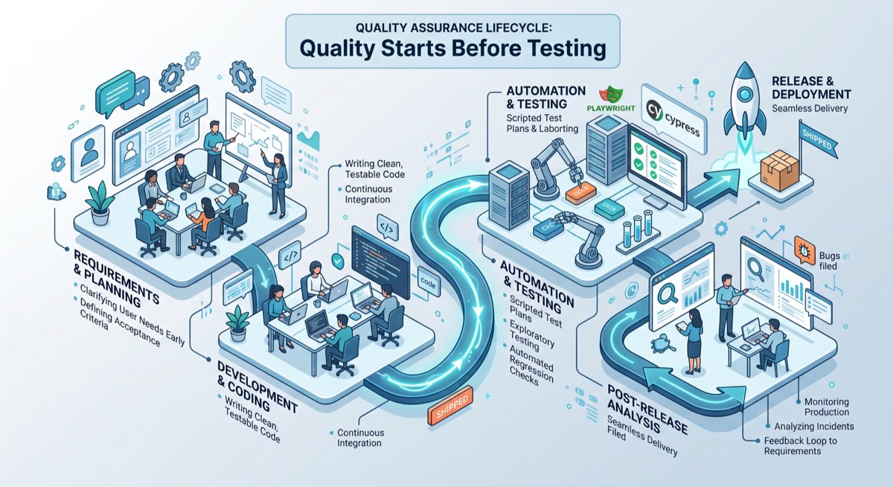

Kvalitet počinje prije prve linije koda: kako pristupam QA-u
Zašto QA koji počinje već kod zahtjeva, kombinuje različite vrste testiranja i zatvara krug nakon objavljivanja gradi stvaran kvalitet proizvoda.
Većina ljudi zamišlja QA kao fazu neposredno prije objavljivanja: neko prođe kroz build, označi par kućica i da zeleno svjetlo. U praksi, dio posla sa najvećim uticajem dešava se mnogo ranije, i skoro da nema veze sa klikanjem bilo čega. Kvalitet se odlučuje u razgovoru o zahtjevima, održava se kroz kombinaciju pristupa testiranju tokom razvoja, štiti automatizacijom tamo gdje je to najbitnije, i zatvara iskrenim pogledom na ono što je ipak nekome promaklo. Evo kako zapravo prolazim kroz taj ciklus.

Uključivanje prije nego što postoji ijedna linija koda
Trudim se da budem u prostoriji dok se zahtjevi tek oblikuju, a ne tek pošto su predati kao gotova specifikacija. To je tačka u kojoj je nejasnoću najjeftinije ispraviti. Zahtjev koji kaže "korisnik treba da bude obaviješten" može značiti email, push notifikaciju, banner unutar aplikacije, ili sve troje, i ako to nije precizirano prije nego što razvoj počne, neko napravi jednu interpretaciju, QA testira prema drugoj, a bug report koji nastane zapravo je samo nesporazum obučen u broj tiketa.
Rano uključivanje znači postavljanje dosadnih, ali neophodnih pitanja: šta tačno znači da je nešto gotovo, koji su kriterijumi prihvatanja, šta se dešava u graničnim slučajevima koje niko nije pomenuo (prazna stanja, istekle sesije, drugi uređaj, spora mreža), i koliki je stvarni rizik ako baš ovaj dio pukne. Kratak razgovor u ovoj fazi — pet minuta na pozivu, nit komentara na tiketu — redovno spriječi da se nešto ponovo gradi dvije nedelje kasnije.
Vrijeme provedeno u True North programu oblikovalo je kako o ovome razmišljam. Lekcija koja mi je ostala je da se stalno vraćam osobi koja će zaista koristiti proizvod, a ne tiketu koji je opisuje. Zahtjev može biti tehnički potpun, a opet promašiti ono što je bitno stvarnom korisniku — tok koji se koristi neprestano naspram onog koji se koristi jednom godišnje, poruku o grešci koja mora imati smisla nekome ko nije inženjer. Kada tu osobu imate na umu dok se zahtjevi tek pišu, to mijenja koji granični slučajevi budu označeni kao vrijedni obrade, a koji razumno padnu niže na listi prioriteta.
Kombinovanje vrsta testiranja tokom razvoja
Kada razvoj počne, nijedan pojedinačni pristup testiranju ne pokriva ono što je zaista potrebno, pa ih vodim nekoliko paralelno. Za nove funkcionalnosti pišem test planove i test slučajeve koji prate kriterijume prihvatanja dogovorene ranije — to je ono što pretvara "o tome smo pričali" u nešto što cijeli tim kasnije može provjeriti. Funkcionalno testiranje potvrđuje da funkcionalnost radi ono što treba; integraciono testiranje provjerava da tiho ne pokvari sisteme oko sebe; regresiono testiranje se stara da jučerašnja ispravka ponovo ne otvori bug od prošlog mjeseca.
Skriptovano testiranje, međutim, pronalazi samo ono za šta je napisano da traži. Tu istraživačko (exploratory) testiranje dobija svoje mjesto — sjednete uz funkcionalnost i namjerno pokušate da je pokvarite na način koji nijedan test slučaj nije predvidio: promjena naloga usred toka, vraćanje naprijed-nazad kroz istoriju pretraživača, slanje forme dva puta zaredom, promjena veličine prozora u pogrešnom trenutku. To nisu granični slučajevi koje bi iko unaprijed skriptovao, ali su tačno ono na šta stvarni korisnici slučajno nalete, a istraživačke sesije su mjesto gdje se ti problemi obično prvi put pojave.
Gdje automatizacija opravdava svoje mjesto
Automatizujem tokove koji su i kritični i repetitivni — checkout, prijavu, unos ključnih podataka, sve što tim dodiruje kod skoro svake izmjene — koristeći Cypress i Playwright. Cilj nije automatizovati sve; cilj je automatizovati puteve gdje bi regresija bila skupa i gdje ručno ponavljanje iste provjere, iznova i iznova, ne donosi nikakvu novu informaciju. Test prijave koji je prošao juče i ponovo prolazi danas nakon izmjene rutiranja ne uči nikoga ničemu novom time što se pokreće ručno — samo potvrđuje da ništa nije puklo, a skripta to može potvrditi brže i pouzdanije nego osoba koja kroz to klikće po petnaesti put.
// Example: a Playwright smoke check for a critical flow,
// run on every pull request before deeper manual testing begins
test('user can complete checkout with a saved card', async ({ page }) => {
await page.goto('/cart');
await page.getByRole('button', { name: 'Checkout' }).click();
await page.getByLabel('Saved card ending in 4242').check();
await page.getByRole('button', { name: 'Place order' }).click();
await expect(page.getByText('Order confirmed')).toBeVisible();
});Ta provjera koja se automatski pokreće na svaku izmjenu daje timu brz signal bez toga da je ja ponovo provjeravam ručno — čime ostaje više vremena za istraživačko testiranje i granične slučajeve kojima je zaista potrebna nečija pažnja.
Bug izvještaji su problem komunikacije, ne samo zadatak dokumentovanja
Bug koji je pronađen, ali loše prijavljen, nikome ne pomaže. Trudim se da pišem izvještaje na osnovu kojih developer može da postupi bez dodatnog pitanja: jasni koraci za reprodukciju, očekivano naspram stvarnog ponašanja, i — podjednako bitno — osjećaj prioriteta zasnovan na tome ko je pogođen i koliko ozbiljno. Vizuelni pomak na rijetko korišćenom admin ekranu i pokvareno dugme za checkout nisu ista vrsta buga, a izvještaj koji to ne naglasi tjera tim da sam smisli prioritet, obično pod vremenskim pritiskom. Formulisanje ozbiljnosti u smislu uticaja na korisnika i biznis, a ne samo tehničkog opisa, je ono što obezbjeđuje da se prvo isprave prave stvari, umjesto bilo kog buga koji je slučajno posljednji prijavljen.
Praćenje nakon objavljivanja
Posao testiranja se ne završava kada release izađe. Kada nešto stigne u produkciju što je trebalo biti uhvaćeno ranije, trudim se da razumijem zašto je promaklo, umjesto da samo prijavim ispravku i idem dalje. Da li uopšte nije postojao test koji pokriva taj put? Da li su kriterijumi prihvatanja od početka bili nejasni? Da li je istraživačkoj sesiji ponestalo vremena prije nego što je stigla do tog toka? Svaki odgovor upućuje na drugačije rješenje — test slučaj koji nedostaje, razgovor o zahtjevima koji je trebalo obaviti ranije, više vremena predviđenog za istraživačko testiranje u sljedećem release-u. Preskakanje ovog koraka znači da se ista vrsta buga obično vraća, samo pod drugim brojem tiketa.
Kvalitet je zajednička odgovornost
Ništa od ovoga ne funkcioniše ako se QA tretira kao jedna jedina kapija na kraju procesa, koja provjerava posao koji se već smatra završenim. Kvalitet se bolje održi kada je ugrađen u razgovore o zahtjevima, u to kako se funkcionalnosti automatizuju, u to kako se bugovi komuniciraju, i u ono što tim nauči nakon release-a. Moja uloga nije da budem posljednja linija odbrane — nego da pomognem da kvalitet postane nešto što cijeli tim gradi u svakom koraku, a ne nešto što jedna osoba doda na kraju.